«تنها چیزی که باید ازش ترسید، خود ترسه» نصیحتی احمقانه بود.
درسته، دستمال توالت احتکار نکنید- اما اگه سیاستمدارها از خود ترس بترسند، خطرهای واقعی رو کوچیک جلوه میدن تا جلوی «هرج و مرج همگانی» رو بگیرن. ترس مشکل نیست، مشکل روش برخوردمون با ترسمونه. ترس به ما انرژی میده تا با خطرات فعلی دست و پنجه نرم کنیم و برای خطرات پیشرو آماده باشیم.
راستش رو بخواید، همهٔ ما (مارسل که همهگیرشناسه، نیکی که کدر/طراحه، و تیم ترجمه) نگرانیم. احتمال زیاد شما هم مثل ما نگرانید! روش برخورد ما با ترسمون یک شبیهسازی بازیناک بود، تا شما هم بتونید روشی برای برخورد با ترستون در پیش بگیرید که به آگاهی منجر بشه:
- چند ماه اخیر (مقدمهای بر همهگیرشناسی، مدل SEIR و R یا R0)
- چند ماه پیشرو (تعطیلی اجباری، ردیابی مخاطب، ماسکها)
- چند سال آینده ( از بین رفتن مصونیت؟، واکسنی نیست؟)
این راهنما (ساخته شده در ۱۲ اردیبهشت ۱۳۹۹، روی این پانویس بزنید!←1) به وجود اومده تا به شما ترس و امید بده. ما برای اینکه بتونیم راهی برای شکست کووید-۱۹ پیدا کنیم، که بتونه سلامت روان و سلامت اقتصادمون رو هم تامین کنه، به خوشبینی نیاز داریم تا برنامهای داشته باشیم، و به بدبینی نیاز داریم تا برنامههای پشتیبان داشته باشیم. همانجور که گلادیس براونین گفته: «یه خوشبین هواپیما رو اختراع کرده و یه بدبین چتر نجات رو».
خب، کمربندهاتون رو ببندین! داریم میریم تا یه سری تلاطم رو تجربه کنیم!

خلبانها از شبیهساز پرواز استفاده میکنن تا یاد بگیرن چه جوری هواپیماشون سقوط نکنه!
همهگیرشناسها، از شبیهساز همهگیری استفاده میکنن تا چه جوری سقوط جامعهٔ بشری رو رقم نزنن!
خب، بیاید خیلی خیلی ساده یه «شبیهساز-پرواز همهگیری» بسازیم! توی این شبیهسازی، افراد مبتلای مسری
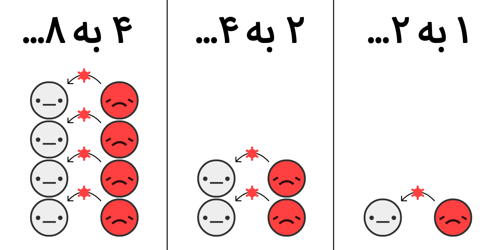
تخمین زده میشه که در ابتدای شیوع کووید-۱۹، به طور میانگین هر چهار روز، ویروس از یک
اگه ما «هر ۴ روز دوبرابر شدن» رو برای جامعهای با فقط ۰٫۰۰۱%
روی "شروع" بزن تا بتونی بازی کنی. راستی میتونی بعدش تنظیمات رو عوض کنی و دوباره بازی کنی: (جزئیات فنی: 3)
این نمودار رشد نمایی هست. آروم شروع میشه و یهو منفجر میشه.از «بیخیال، فقط یه سرماخوردگی سادهاس» تا «اوه! آره، سرماخوردگی گور دستهجمعی توی یه شهر پولدار به وجود نمیاره!».
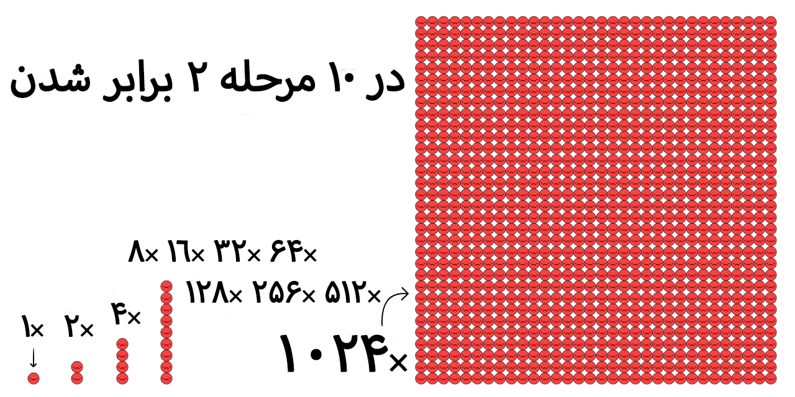
اما، این شبیهسازی اشتباست. رشد نمایی، خوشبختانه، تا ابد ادامه پیدا نمیکنه. چیزی که جلوی شیوع ویروس رو میگیره اینه که اگه بقیه قبلا ویروس رو گرفته باشن:
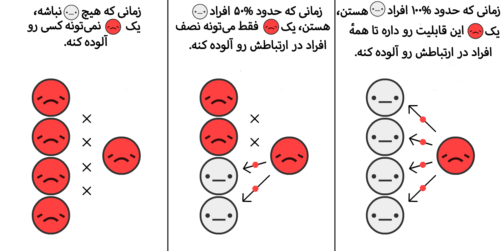
هرچی
خب این چهجوری رشد یک همهگیری رو تغییر میده؟ بیایین ببینیم:
این منحنی «S - شکل» منحنی رشد لجستیک هستش. کمکم شروع میشه، منفجر میشه، و دوباره سرعتش کم میشه.
اما این شبیهسازی همچنان اشتباهه. ما این واقعیت رو در نظر نمیگیرم که افراد مبتلا
برای راحتی کار، فرض کنید همهٔ افراد مبتلا
در مورد کووید-۱۹، تخمین زده میشه که شما برای ۱۰ روز مبتلا
این برعکس رشد نماییه، نمودار زوال نمایی.
خوب به نظرتون چی میشه اگه این توابع «S-شکل» رشد و زوال نمایی رو همراه همدیگه شبیهسازی کنیم؟

بیاین بررسی کنیم.
نمودار قرمز موارد فعال فعلی
نمودار خاکستری تمامی موارد (فعال
و اینجاست که نمودار مشهورمون ظاهر میشه! این یک منحنی زنگولهای نیست، حتی یک منحنی «لگاریتمی-نرمال» نیست. اصلا اسمی نداره. ولی شونصد هزار بار دیدینش و التماس میکنن که صافاش کنیم.
این مدل SIR هست،5
(مخفف
این دومین اصل مهمه در «مقدمهای بر همهگیرشناسی»:
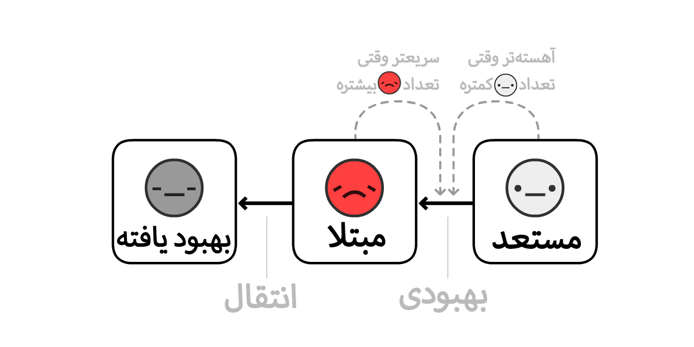
توجه: شبیهسازیهایی که منجر به سیاستگذاری میشن، خیلی خیلی پیچیدهتر از این هستن. ولی مدل SIR همچنان میتونه یافتههای عمومی رو توضیح بده، حتی اگه نکات ظریفی رو در نظر نگیره.
اما بیاید یه ظریفکاری رو اضافه کنیم: قبل از اینکه
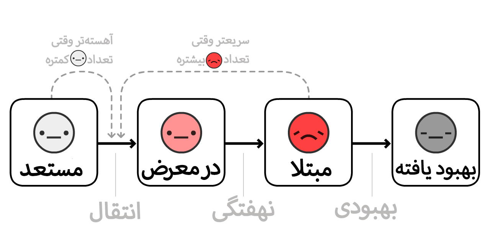
(این نوع دیگهٔ مدل، اسمش مدل SEIR6هستش، که "E" به معنای «در معرض»
برای کووید-۱۹، تخمین زده میشه شرایط مبتلای-غیر-مسری
نمودار قرمز + صورتی موارد فعال فعلی(مبتلا
نمودار خاکستری تمامی موارد (موارد فعال + بهبود یافته
تفاوت زیادی ایجاد نشد! مدت زمانی که ما در معرض
اما چرا؟ به خاطر مهمترین ایده در «مقدمهای بر همهگیرشناسی»:

که مخفف «عدد سرایت» "Reproduction number" هستش. این عدد میانگین تعداد افرادیه که یک فرد مبتلا
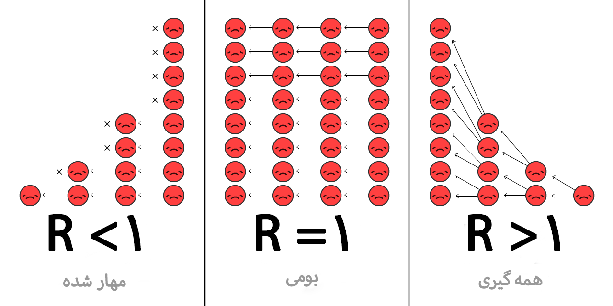
R در طی شیوع یک بیماری تغییر پیدا میکنه، چون مصونیت بیشتری پیدا میکنیم و مداخلهٔ بیشتری انجام میدیم.
R0 که به صورت آر-نات(R-nought) تلفظ میشه، در واقع به مقدار R هنگام شروع گفته میشه. R0بیشتر نمایانگر قدرت خود ویروسه، اما همچنان ممکنه از جایی به جایی دیگه فرق کنه. به عنوان مثال توی شهرهای که تراکم جمعیتی بالایی دارن، R0 بیشتر از مناطق روستایی کم تراکمه.
(در بعضی از گزارشهای خبری -حتی بعضی مقالات علمی- R رو با R0 قاطی میکنن. یه بار دیگه، عبارت علمی لزوما خوب نیستن!)
مقدار R0 برای آنفولانزای فصلی مشهور حدود ۱٫۲۸ هستش.8. این یعنی در شروع شیوع آنفولانزا، هر فرد
مقدار R0 برای کووید-۱۹ برابر ۲.۲ تخمین زده شده،9 اما یک مطالعهٔ نهایی نشده این عدد رو در شهر ووهان ۵.۷(!) تخمین زده.10
در شبیهسازی ما - در شروع و به صورت میانگین – یک
با این محاسبهگر R0 کمی بازی کنید، تا ببینین R0 چهطور به زمان بهبودی و زمان ابتلای جدید وابسته است:
اما حواستون باشه، هرچی
وقتی تعداد کافی از مردم ایمنی پیدا کنن، 1>R خواهد بود، در نتیجه ویروس مهار شده! به این ایمنی جمعی میگن. برای آنفلوانزاهای رایج، ایمنی جمعی از طریق واکسن میسر میشه. این که بدون هیچ کنترلی اجازه بدیم مردم «ایمنی جمعی طبیعی» پیدا کنن یه ایدهٔ وحشتناکه. (اما نه به دلیلی که فکر میکنید، بعدا توضیح خواهیم داد.)
الان بیاید نگاهی دوباره به مدل SEIR بیندازیم، ولی R و R0 در طی زمان و مرز ایمنی جمعی رو هم ببینیم:
توجه: مجموع موارد در ایمنی جمعی متوقف نمیشه، بلکه از حدش بالا میزنه! بالاتر رفتن از حد هم دقیقا زمانی رخ میده که موارد فعلی به اوج رسیدن. (این موضوع بدون توجه به اینکه تنظیمات رو چه جوری تغییر بدید همیشه رخ میده - خودتون امتحانش کنید.)
این به خاطر اینه که وقتی تعداد غیر-
اگه فقط یک درس از این راهنما میخواید همراه خودتون داشته باشید،این عکسه. این نمودار ممکنه پیچیده به نظر بیاد، پس یه کم وقت بذارید تا کامل متوجهاش بشید:
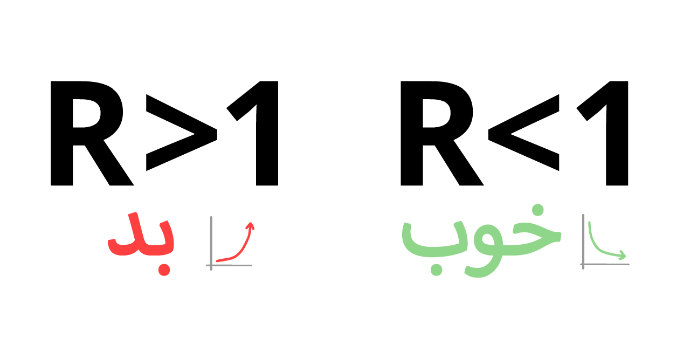
یعنی: نیاز نیست که همهٔ ناقلها رو شناسایی کنیم، یا حتی تقریبا همهشون رو، تا جلوی کووید-۱۹ رو بگیریم!
به نظر یه تناقض میاد. کووید-۱۹ به شدت مسریه، با این حال برای مهارش، ما «فقط» نیاز به کنترل بیش از ۶۰٪ مبتلاها داریم. ۶۰٪ ؟! اگه این نمره مدرسه بود، یعنی ۱۲! اما اگه 2.5=R0 باشه، کاهش ۶۱٪ایش ما رو به R=0.975 میرسونه، در نتیجه 1>R، و ویروس مهار شده!(فرمول دقیق: 12)
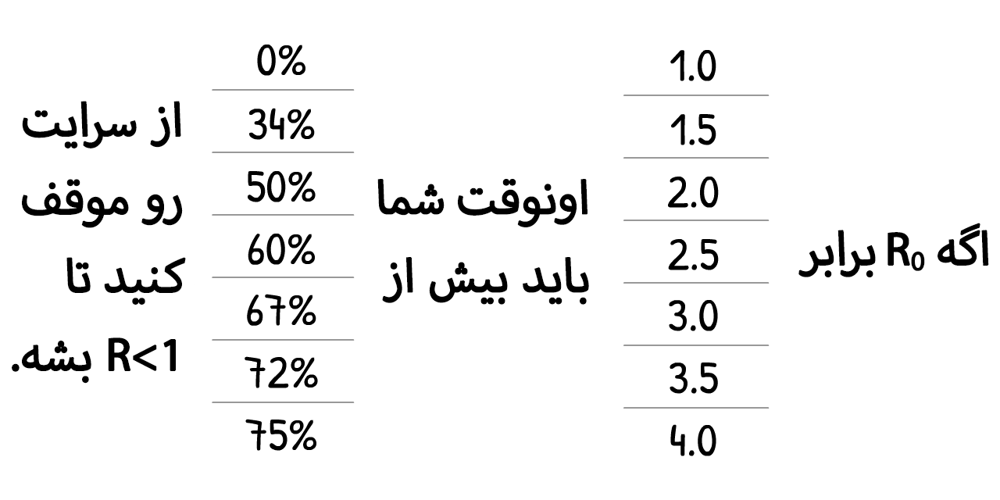
(اگر فکر میکنید R0 یا سایر متغیرها توی شبیهسازیهای ما خیلی کم/زیاد هستن، خوشحالیم که پیشفرضهای ما رو مورد چالش قرار میدید. یک حالت «شنبازی» در پایان این راهنما وجود داره که میتونید اعداد دلخواه خودتون رو داخلش وارد کنید و حالتهای مختلف رو شبیهسازی کنید.)
هر مداخلهای دربارهٔ کووید-۱۹ که تا حالا شنیدید - شستن دستها، فاصلهگذاری فیزیکی/اجتماعی، تعطیلیها عمومی و شخصی، ردیابی مخاطبان، پوشیدن ماسک و حتی «ایمنی جمعی»- همه یه کار رو انجام میدن:
رسیدن به 1>R.
خوب، بیاید از «شبیهساز-پرواز همهگیری»مون استفاده کنیم تا بفهمیم:چه راهی وجود داره که به 1>R برسیم و همزمان سلامت روان و اقتصادمون رو حفظ کنیم؟
خودتون رو آمادهٔ یک فرود اضطراری کنید…
… میتونست بدتر باشه. این جهان موازیای که ازش پیشگیری کردیم.
سناریوی ۰: مطلقاً هیچ کاری نمیکردیم
تقریبا ۱ نفر از هر ۲۰ نفر بیمار مبتلا به کووید-۱۹ نیاز به رفتن به ICU (بخش مراقبتهای ویژه) پیدا میکنه.13 در کشورهای ثروتمندی مثل ایالات متحدهٔ آمریکا، ۱ تخت ICU به ازای هر ۳۴۰۰ نفر هست.14 در نتیجه توی آمریکا میشه بیماری ۲۰ نفر از هر ۳۴۰۰ نفر رو به صورت همزمان تحمل کرد - حدود ۰.۶٪ جمعیت.
حتی اگه ظرفیت مراقبتهای ویژه رو بیش از سه برابر کنیم و به حدود ۲٪ درصد هم برسونیم، این اتفاقیه که میاوفته اگه مطلقاً هیچ کاری انجام ندیم:
خوب نیست.
این همون چیزیه که تحقیق ۱۶ مارس امپریال کالج لندن کشف کرد: هیچ کاری نکنید، اونوقت تختهای ICUمون تموم میشه و بیش از ۸۰٪ مردم مبتلا به بیماری میشن. ( یادمون باشه: مجموع موارد از سطح ایمنی جمعی فراتر میره.)
حتی اگه ۰.۵٪ درصد افراد مبتلا فوت کنن 15- فرضی سخاوتمندانه وقتی ICUای در کار نیست- در کشورهایی بزرگی مانند ایالات متحده، با ۳۰۰ میلیون جمعیت، ۰.۵٪ از ۸۰٪ ۳۰۰ میلیون = ۱.۲ میلیون فوت کردن… اگه هیچ کاری نکنیم.
(خیلی از گزارشهای خبری و پستهای شبکههای اجتماعی میگن «۸۰٪ مبتلا میشن» بدون اینکه بگن «اگه هیچ کاری نکنیم». ترس واسطهای برای کلیک گرفتن بیشتر شده، نه ادراک. هعییی)
سناریوی ۱: صاف کردن نمودار/ایمنی جمعی
برنامهٔ «نمودار رو صاف کنیم» توسط همهٔ ارگانهای سلامت عمومی در حال تبلیغ بود، در عین حالی که برنامهٔ ابتدای بریتانیا، «ایمنی جمعی»، به صورت همگانی مورد تمسخر واقع شد. این دو برنامه یکی هستن. بریتانیا فقط به صورت ضعیفی اعلاماش کرد.15
با این وجود، هر دو برنامه نقصی مهلک داشتند.
بیاید اول به دو روشی اصلی که برای «صاف کردن نمودار» وجود داشت نگاهی بیندازیم: شستن دستها و فاصلهگذاری فیزیکی.
شستن بیشتر دستها در کشورهای با درآمد بالا سرماخوردگی و آنفولانزا رو حدود ۲۵٪ کاهش میده16، و تعطیلی عمومی در سطح شهر لندن ارتباط نزدیک رو حدود ۷۰٪ درصد کاهش داده.17 خوب پس بیاید فرض کنیم که شستن دستها میتونه R رو تا ۲۵٪ کاهش بده، و فاصلهگذاری میتونه R رو تا ۷۰٪ کاهش بده:
بیاید با محاسبهگر زیر ببینم که چه جوری درصد غیر-
حالا، بیاید ببینم چه اتفاقی برای کووید-۱۹ میوفته، اگه با شروع از مارس ۲۰۲۰، شستن دستها رو افزایش بدیم و فاصلهگذاری معتدلی رو در پیش بگیریم- که R کاهش پیدا کنه، اما همچنان بالای ۱ خواهد بود:
سه نکته:
این کارها مجموع موارد رو کاهش حتی اگه 1>R نشه، کاهش R باعث نجات جون انسانها میشه، چون «بالاتر رفتن» از حد ایمنی جمعی رو کمتر میکنه. خیلی از مردم فکر میکنن «صاف کردن نمودار» موارد ابتلا رو در طی زمان پخش میکنه اما مجموع رو کاهش نمیده. این پیشفرض بر اساس هر مدل همهگیرشناسی غیرممکنه. چون گزارشهای خبری «ابتلای بیش از ۸۰٪ مردم رو» اجتنابناپذیر میدونستن، مردم فکر میکردن در هر صورت این اتفاق میاوفته. هعییی.
به خاطر مداخلههای اضافی، اوج شیوع پیش از رسیدن به ایمنی جمعی خواهد بود. در واقع، در این شبیهسازی، مجموع موارد ابتلا خیلی کم فراتر از حد ایمنی جمعی خواهد رفت - برنامهٔ بریتانیا! وقتی که 1>R شد، میتونید بیخیال بقیه مداخلات بشید، و کووید-۱۹ مهار شده خواهد بود. ولی، به جز یک مشکل…
ما هنوز دچار کمبود ICU میشیم. برای چندین ماه. (حواسمون باشه که ما برای این شبیهسازیها فرض کرده بودیم تعداد ICU ها سه برابر حد فعلی هستش.)
این یافتهٔ دیگهٔ تحقیق ۱۶ مارس امپریال کالج بود، که بریتانیا رو قانع کرد برنامهٔ قبلیایش رو لغو کنه. هر اقدامی برای فرونشانی ( کاهش R، اما همچنان وجود R>1) شکست خواهد خورد. جلوگیری ( کاهش R به حدی که 1>R برسه) تنها راه موفقیت خواهد بود.
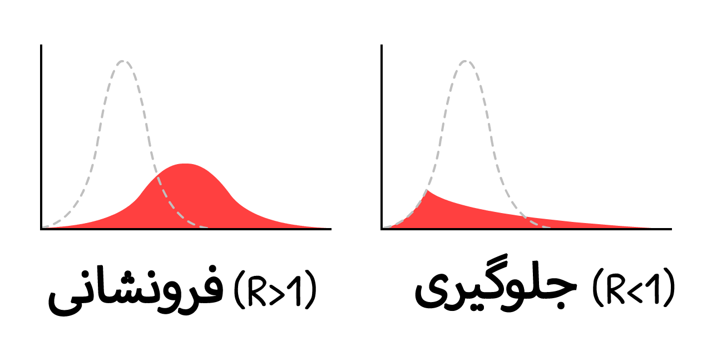
این دیگه «صاف کردن» نمودار نیست، لهکردن نموداره. برای مثال، با داشتن یک…
سناریوی ۲: تعطیلی اجباری چند ماهه
بیاید ببینیم چه اتفاقی میاوفته وقتی با یک تعطیلی ۵ ماهه نمودار رو لهکنیم، تعداد
اوه.
این «موج دومه» که همه در موردش صحبت میکنن. به محضی اینکه تعطیلیها رو برداریم، دوباره به R>1 خواهیم رسید. یعنی، یک
تعطیلی اجباری درمان نیست، فقط فرصتی برای یه شروع مجدده.
خوب، چی میشه اگه دورههای تعطیلی متناوب داشته باشیم؟ دوباره و دوباره.
سناریوی ۳: تعطیلیهای متناوب
این راه حل برای اولین بار توسط تحقیق ۱۶ مارس امپریال کالج پیشنهاد شده بود، و بعدا توسط مقالهای از هاروارد تکرار شد. 19
بیاید یک شبیهسازی رو بررسی کنیم: (بعد از یک دور اجرای «سناریوی ضبط شده»، شما میتونید برنامهٔ تعطیلی خودتون رو شبیهسازی کنید. برای این کار نوارها رو وقتی شبیهسازی در حال اجراست تغییر بدید. حواستون باشه میتونید شبیهسازی رو متوقف و دوباره اجرا کنید و همچنین سرعت شبیهسازی رو تغییر بدید.)
این روش موارد ابتلا رو زیر ظرفیت ICUی موجود میاره! و خیلی بهتر از ۱۸ ماه تعطیلی قبل از رسیدن به واکسنه. فقط کافیه... چندین ماه همه جا رو ببندیم، دوباره برای چند ماه بازشون کنیم و این فرایند رو تا جایی ادامه بدیم که واکسن در دسترس باشه.(و اگه واکسنی پیدا نشد، این کار رو اینقدر تکرار کنیم تا ایمنی جمعی پیدا کنیم…. در ۲۰۲۲.)
ببینید، درسته که یک خط برای «ظرفیت ICU» بکشیم و بر اساس اون عمل کنیم، اما کلی چیز مهم دیگه هم هست که ما نمیتونیم اینجا شبیهسازیشون کنیم. مثل:
سلامت روانی: تنهایی یکی از بزرگترین عوامل ایجاد افسردگی، اضطراب و خودکشیه. همچنین میتونه اندازهٔ کشیدن ۱۵ سیگار در روز خطر مرگ زودرس رو افزایش بده.20
سلامت اقتصادی: توی این شرایط گفتن اینکه «اقتصاد پس چی؟» شاید این رو تداعی کنه که لابد بیشتر پول اهمیت داره تا جون انسانها، اما «اقتصاد» فقط خرید و فروش نیست: اینه که مردم بتونن برای عزیزانشون غذا و سرپناه فراهم کنن، برای آینده فرزندشون سرمایهگذاری کنن و از غذا و هنر لذت ببرن، یعنی چیزهایی که زندگی رو برای زندگیکردن ارزشمند میکنه. جدا از این موارد، فقر خودش یکی از عواملیه که تاثیرات وحشتناکی روی سلامت جسمانی و روانی میذاره.
منظور این نیست که نباید تعطیلیها رو در صورت نیاز دوباره اعمال کنیم! استفاده از تعطیلیها به عنوان «قطعکنندهٔ مدار» رو بعدا بررسی میکنیم. اما با این شرایط ایدهآل نیست.
صبر کنید… مگه تایوان و کرهجنوبی همین حالا هم کووید-۱۹ رو مهار نکردن؟ در طی ۴ ماه، بدون تعطیلیهای اجباری بلند مدت؟
چه جوری؟
سناریوی ۴: آزمایش، ردیابی، قرنطینه
«حتما! ما *میتونستیم* کاری که کرهجنوبی در شروع شیوع کرد رو بکنیم، ولی الان خیلی دیره. ما اون فرصت رو از دست دادیم.»
اما موضوع دقیقا همینه! «تعطیلی اجباری درمان نیست، فرصتی برای یه شروع مجدده»… و شروع مجدد چیزیه که ما نیاز داریم.
برای اینکه متوجه بشیم کرهجنوبی و تایوان چهجوری کووید-۱۹ رو مهار کردن، ما باید مسیر زمانی دقیق ابتلا به کووید-۱۹ رو بشناسیم21:
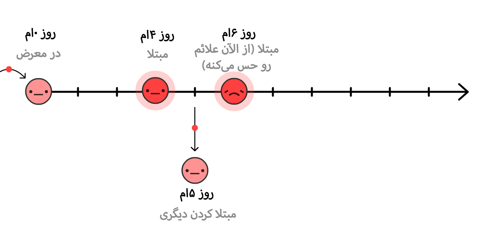
اگه موارد ابتلا رو فقط وقتی خودشون متوجه بیماریشون شدن وارد خود-قرنطینگی کنیم ( یعنی وقتی علائم بیماری رو مشاهده کردن) ویروس همچنان میتونه گسترش پیدا کنه:
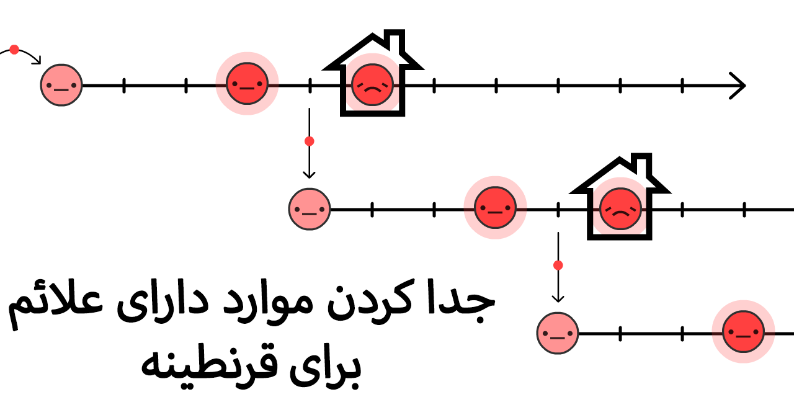
و در حقیقت ۴۴ درصد انتقالهای شبیه این هستند:انتقال پیش از علائم! 22
اما، اگه ما افرادی رو که با اخیرا با مبتلایی ارتباط نزدیک داشتن رو شناسایی و قرنطینه کنیم… جلوی گسترش بیماری رو میگیرم، با یک قدم جلوتر بودن!
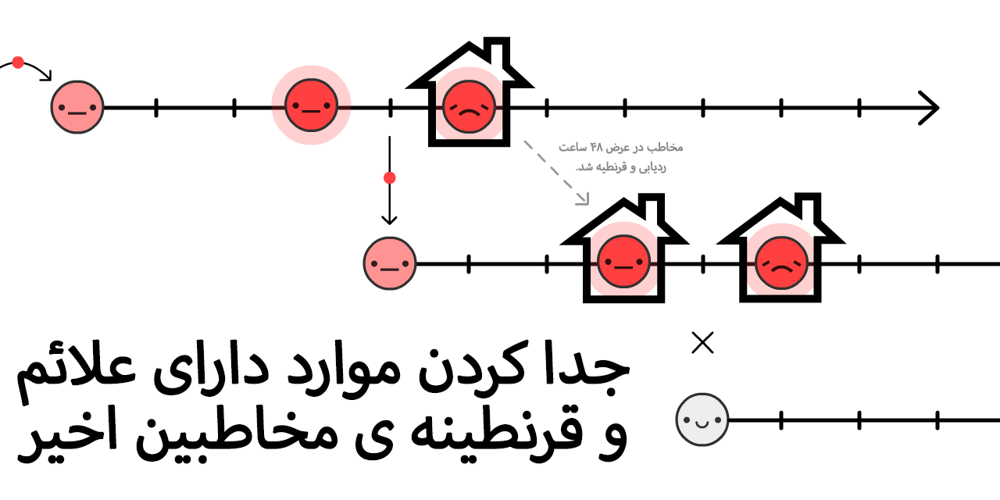
به این روش میگن ردیابی مخاطبان، این یک ایدهٔ قدیمیه، و روشی که برای مقابله با ابولا در مقایس بینظیری انجام شد23 و بنیان روشیه که تایوان و کرهجنوبی برای مهار کووید-۱۹ به کار گرفتن.
( این روش همچنین به ما اجازه میده از منابع محدود آز مایشهامون به صورت بهینه استفاده کنیم، تا بتونیم
به طور معمول، مخاطبان با مصاحبههای حضوری شناسایی میشدن، ولی این روش به تنهایی خیلی برای بازهٔ زمانی حدود ۴۸ ساعته مفید برای کووید-۱۹ کنده. به همین دلیله که ردیابان مخاطب نیاز به کمک دارن، این که حمایت بشن - و نه جایگزین بشن - با اپهای ردیابی مخاطبان.
( این ایده از «خورههای فناوری» نشات نگرفته: ایدهٔ استفاده از یک اپ برای مقابله با کووید-۱۹ برای اولین بار توسط تیمی از همهگیرشناسان دانشگاه آکسفورد مطرح شده.)
صبر کنید. یه اپ که افرادی که باهاشون در تماس بودید رو ردگیری کنه؟ … این به معنی اینه که حریم شخصیمون رو از دست بدیم، و تحویلش بدیم به برادر بزرگ؟
به هیچ وجه! DP-3T، تیمی از همهگیرشناسان و رمزنگاران ( که شامل یکی از ماها هم میشه، مارسل سالاته) در حال حاضر دارن روی یک اپ ردیابی مخاطبان منبع باز کار میکنن که هیچ اطلاعات در مورد هویت، موقعیت، افرادی که باهاشون در تماس بودید، یا حتی این که با چند نفر در تماس بودید رو لو نمیده.
این اپ اینجوری کار میکنه:

(کمیک کامل رو میتونید در اینجا ببینید. جزئیات در مورد «شوخیهای فریبکارانه»/«اطلاعات مثبتِ اشتباه» و غیره رو میتونید در پانویس ببینید:24)
همراه با تیمهای دیگه از جمله TCN Protocol25 و MIT PACT26، این ایدهها منابع الهامی برای گوگل و اپل شدند تا به دنبال وارد کردن ردیابی مخاطبان با رعایت حریم شخصی در داخل سیستمعاملهای آیاواس و اندروید باشن.27 (به گوگل/اپل اعتماد ندارید؟ خوبه! زیبایی این سامانهها در صورت پیادهسازی اینه که به اعتماد نیازی ندارند.) به زودی مقامات بهداشت محلیتون ازتون خواهند خواست که چنین اپهایی رو دانلود کنید. اگر این اپها مبتنی بر رعایت حریم شخصی بودن و کدهاشون به صورت عمومی موجود بود، لطفا نصبشون کنید!.
پس افرادی که موبایل هوشمند ندارن چی؟ یا افرادی که از طریق دستگیرهٔ در مبتلا میشن؟ یا افرادی که «واقعا» بدون علامت بیماریشون رو سپری میکنن؟ اپهای ردیابی مخاطبان نمیتونن جلوی همهٔ موارد انتقال رو بگیرن… و این اشکالی نداره! نیازی نیست که همهٔ موارد انتقال رو شناسایی کنیم، فقط بیش از ۶۰٪ شون کافیه تا بتونیم به 1>R برسیم.
( در پانویس در مورد سردرگمیهایی که بین موارد «واقعا» بدون علامت و انتقال پیش از علائم پیش میاد بحث میکنم - خلاصتن موارد «واقعا» بدون علامت نادر هستن:28)
قرنطینه کردن افرادی که علامتدار هستن میتونه مقدار R رو تا ۴۰٪ کاهش بده، و اگر مخاطبینی که باهشون در تماس بودن (چه با علامت پیشین و چه حتی بدون علامت) رو قرنطینه کنیم این مقدار ۵۰٪ دیگه کاهش پیدا میکنه:29:
در نتیجه، بدون این که ۱۰۰٪ مخاطبان رو قرنطینه کنیم و هیچگونه تعطیلی اجباری اعمال کنیم، میتونیم به 1>R برسیم. این جوری خیلی برای سلامت روان و اقتصادمون بهتره.( برای مردمی که مجبور به خود-قرنطینگی میشن، دولتها باید ازشون حمایت کنن - خرج آزمایشهاشون رو بدن، از حفظ شغلشون اطمینان حاصل کنن، مرخصی-با-حقوق براشون درنظر بگیرن و موارد مشابه. این جوری هزینهها خیلی کمتر از یه تعطیلی اجباری سراسری خواهد بود.)
بعدش سعی میکنیم 1>R رو نگه داریم تا زمانی که واکسن رو در اختیار داشته باشیم که باعث میشه افراد مستعد
(نکته: این محاسبهگر فرض میکن واکسنها ۱۰۰٪ موثرند. حواسمون باشه در واقعیت، برای این که به ایمنی جمعی برسیم، نیازه تعداد افراد بیشتری از حدی که برای «ایمنی جمعی» تعیین کردیم واکسن بزنیم.)
خوب، صحبت کردن بسه. در زیر میتونید شبیهسازی از این موارد رو ببینید:
- چند ماه تعطیلی، تا وقتی که بتونیم…
- روش مطمئنی برای «آزمایش، ردیابی و قرنطینه» پیدا کنیم، تا وقتی که بتونیم…
- به مقدار کافی واکسن برای مردم دست پیدا کنیم، که یعنی…
- ما بردیم.
راهش اینه! اینجوریه که میتونیم یه فرود اضطراری انجام بدیم.
اینجوریه که میتونیم کووید-۱۹ رو شکست بدیم.
…
ولی اگه هنوز چیزها درست پیش نرن؟ وقایع تا اینجا وحشتناک پیش رفتن. این ترسه، و خوبه! ترس به ما امکان میده تا برنامههای جایگزین داشته باشیم.
بدبین چتر نجات رو اختراع میکنه.
سناریوی ۴+: ماسک برای همه، تابستان، قطعکنندهٔ مدار
اگه R0از اون مقداری که فکر میکردیم بزرگتر باشه، و مداخلههایی هم که بهشون اشاره کردیم، حتی فاصلهگذاریها، هنوز کافی نباشن تا به 1>R برسیم، اون وقت چی؟
یادمون باشه، حتی اگه به 1>R نرسیم، کاهش R همچنان از اوج گرفتن بیش از حد مجموع موارد جلوگیری میکنه، در نتیجه جون انسانها نجات پیدا میکنه. اما هنوز ایدهآل ما اینه که به 1>R برسیم، بنابراین یه سری راه دیگه برای کاهش R رو میتونیم مدنظر قرار بدیم.
ماسک برای همه:
ممکنه بگین: «من فکر میکردم ماسکها جلوی مریض شدن آدم رو نمیگیرن.»
درسته. ماسکها جلوی مریض شدن شما رو نمیگیرن ... ولی نمیذارن بقیه توسط شما مریض بشن.30
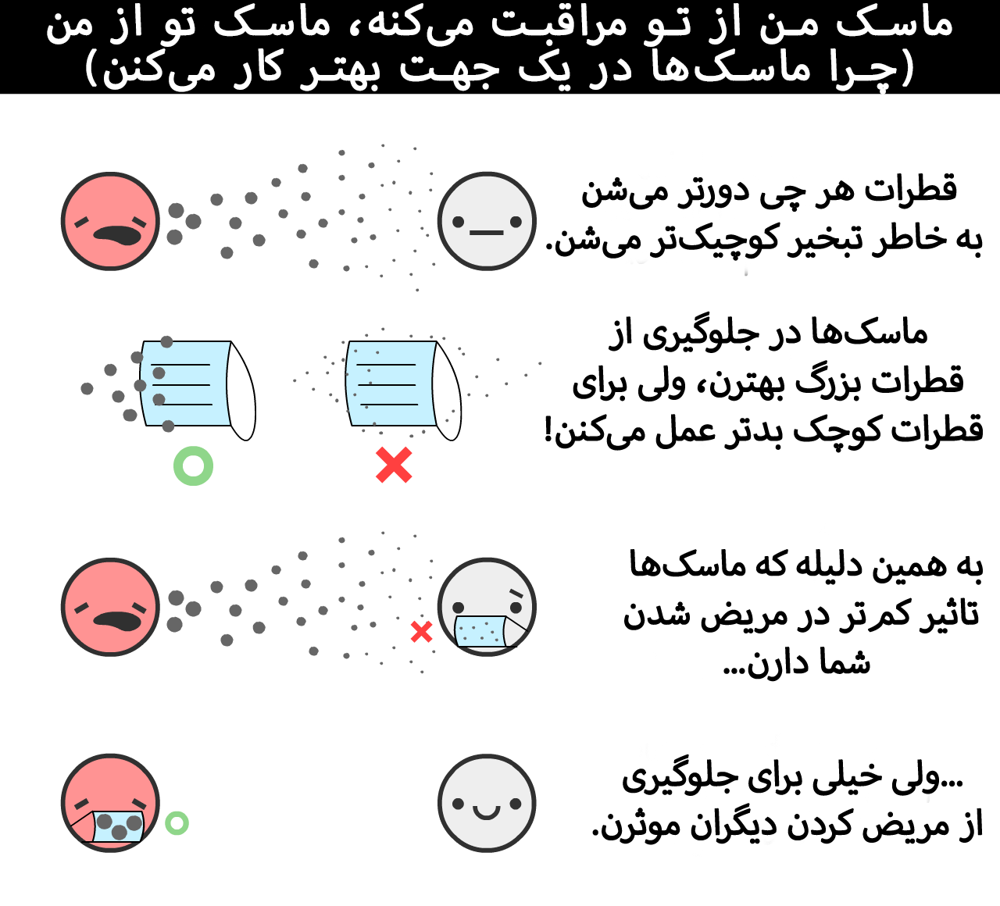
اگه بخوایم با عدد و رقم صحبت کنیم: استفاده از ماسکهای جراحی برای افراد مبتلا به سرماخوردگی یا آنفولانزا میتونه جلوی ویروسهای موجود در ذرات معلق هوا رو تا ۷۰٪ بگیره.31 تاثیری مشابه با تعطیلیهای اجباری!
با این وجود، ما از تاثیرات ماسک بر روی کووید-۱۹ به صورت خاص مطمئن نیستیم. ما باید یافتههای علمی رو وقتی منتشر کنیم که ۹۵٪ از صحتاشون اطمینان داشته باشیم(… باید 32) استفاده از ماسکها، تا زمان نگارش این متن(۱۲ اردیبهشت ۱۳۹۹)، «اطمینان کمتر از ۹۵٪» دارن.
با این حال، همهگیرشناسی مثل بازی پوکره. وقتی فقط ۹۵٪ اطمینان دارید شرط ببندید، و اون وقت هرچی در چنته دارید رو از دست میدید. همونجور که مقالهٔ اخیر مجلهٔ پزشکی بریتانیا اشاره میکنه33 ، در شرایط عدم اطمینان ما باید تحلیل سود/هزینه انجام بدیم:
هزینه: اگه از ماسکهای پارچهای خونگی استفاده کنیم (که حدود دو سوم ماسکهای جراحی موثرن34)، خیلی ارزون در میاد. اگر هم بخواهیم از ماسکهای جراحی استفاده کنیم، یه کم گرونتر میشه، اما هنوز هم تقریبا ارزون خواهد بود.
سود: حتی اگه شانس کاهش انتقال ویروس تا ۷۰٪ توسط ماسک های طبی ۵۰-۵۰ باشه، میانگین «امید ریاضی» اثرگذاری ۳۵٪ خواهد بود، شبیه یک نیمه تعطیلی اجباری! خوب بیاید تخمین-حدسی بزنیم که ماسکهای جراحی میتونن R رو تا ۳۵٪ کاهش بدن، که عدماطمینانمون رو هم پوشش بده.(یک بار دیگه، شما میتونید پیشفرضهای ما رو با کم و زیاد کردن نوارها مورد چالش قرار بدید.)
(استدلال ها دیگه له/علیه ماسک ها:35)
ماسکها بهتنهایی منجر به 1>R نمیشن. بلکه شستشوی دستها و «آزمایش، ردیابی و قرنطینه» فقط میتونن ما رو به R=1.10 برسونن. اگه یک سوم مردم ماسک بپوشن، به مقدار 1>R میرسیم و در نتیجه ویروس مهار خواهد شد.
تابستون:
قبول، این مداخلهای نیست که بتونیم کنترلش کنیم، اما کمک میکنه. بعضی رسانههای خبری گزارش میدن که تابستون هیچ اثری روی کووید-۱۹ نداره، اما این نصف حقیقته، تابستون منجر به 1>R نمیشه، اما R رو کاهش میده.
در مورد کووید-۱۹، هر افزایش ۱° سانتیگرادی دما باعث کاهش ۱.۲٪ مقدار R میشه.36 تفاوت دمای تابستون با زمستون در شهر نیویورک ۲۶° است،37 در نتیجه تابستون R رو حدود ۳۱٪ کم میکنه.
تابستون به تنهایی باعث رسیدن به 1>R نمیشه،اما اگر منابعمون محدود باشه، میتونیم برخی از مداخلات رو توی تابستون کاهش بدیم - تا بتونیم در طول زمستون دوباره افزایششون بدیم.
تعطیلی اجباری به عنوان «قطعکنندهٔ مدار»:
اگر همچنان هم نتونستم به 1>R برسیم… میتونیم یه تعطیلی اجباری دیگه اعمال کنیم.
اما نباید برای همیشه روند ۲-ماه-بسته / ۱-ماه-باز دوباره و دوباره اتفاق بیوفته! چون R کاهش پیدا میکنه، ما فقط نیاز به یکی یا دو تا تعطیلی اجباری به عنوان «قطعکنندهٔ مدار» داریم تا واکسن در دسترس قرار بگیره. (سنگاپور اخیرا مجبور شد این کار رو انجام بده، «برخلاف» اینکه کووید-۱۹ رو برای ۴ ماه کنترل کرده بودن. این شکست نیست: این چیزیه که پیروزی به اون وابسته است.)
حالا بیاید شبیهسازی این سناریو رو در «حالت سادهترش» در نظر بگیرم:
- تعطیلی اجباری، بعدش
- حد معقولی از رعایت بهداشت و «آزمایش، ردیابی و قرنطینه»، و حد متعادلی از استفاده «ماسک برای همه»، بعدش…
- یک تعطیلی اجباری به «قطعکنندهٔ مدار» قبل از به دست اومدن واکسن.
اگه بخوایم از یه سری مداخلات دیگه اسم ببریم که با استفاده از اونها بتونیم R رو بیشتر کاهش بدیم:
- محدودیت/ قرنطینههای مسافرتی
- بررسی تب در مراکز خرید و مدارس
- پاکسازی کامل اماکن عمومی
- جایگزینی دست دادن با پا به هم زدن
- و چیزهایی دیگهای که نبوغ انسانها میتونه به وجود بیاره
…
امیدوارم این برنامهها به شما امید ببخشه.
حتی در سناریوهای بدبینانه، میشه کووید-۱۹ رو شکست داد، در حالی که سلامت مالی و روانیمون رو حفظ کنیم. از تعطیلیهای اجباری به عنوان یک «دکمهٔ شروع مجدد» استفاده کنیم، مقدار R رو کمتر از ۱ نگه داریم با کارهایی مثل قرنطینه + ردیابی مخاطبان با توجه به حریم شخصی + ماسک (حداقل پارچهای) برای همه… و زندگی میتونه با حالت شبه-عادیایش برگرده.
درسته، ممکنه دستهامون خشک بشه. ولی بعدش میتونیم قرارمون رو به کتابفروشی کمیکی دعوت کنیم! میتونیم بریم با دوستامون آخرین فیلمهای پرفروش هالیوود رو ببینیم. میتونیم توی کتابخونهها مردم رو ببینیم، خلاصه شادی بودن با مردم و زندگی کردن رو بچشیم.
حتی در بدترین حالتهای ممکن… زندگی ادامه داره.
خوب، حالا بیاید برای بدترین حالت از بدترین سناریوهای ممکن برنامهریزی کنیم. فرود روی آب، جلیقهٔ نجاتتون رو بردارید، و لطفا نورها رو به سمت درهای خروج اضطراری دنبال کنید:
کووید-۱۹ رو گرفتهاید، و بهبود پیدا کردید. یا اینکه واکسن کووید-۱۹ رو دریافت کردید. در هر صورت، شما الان ایمن هستید.
...برای چه مدت؟
- کووید-۱۹ بیشترین شباهت رو با سارس داره، که به بازماندههاش ۲ سال ایمنی میداده.38
- کرونا ویروسی که سرماخوردگی «عمومی» رو به وجود میاره به شما ۸ ماه ایمنی میده.39
- گزارشهایی وجود داره از افرادی که از کووید-۱۹ بهبودی پیدا کردن، اما آزمایششون دوباره مثبت شده، اما مشخص نیست آیا این موارد مثبت کاذب بودن یا نه.40
- یک مطالعه که هنوز مورد بررسی دقیق علمی قرار نگرفته نشون میده که ایمنی در مقابل کرونا ویروسی که کووید-۱۹ رو ایجاد میکنه حداقل ۲۸ روز طول میکشه.41
اما برای کووید-۱۹ در انسانها، تا ۱۲ اردیبهشت ۱۳۹۹، «چه مدت» هنوز ناشناختهٔ بزرگیه.
برای شبیهسازیهامون، بیاید در نظر بگیریم که دورهٔ ایمنی ۱ ساله است.
شبیهسازی زیر با ۱۰۰٪
بازگشت نزول نمایی!
به این مدل SEIRS میگن. حرف "S" در این مخفف برای کلمهٔ مستعد (Susceptible) هستش، که یه بار دیگه ظاهر شده.
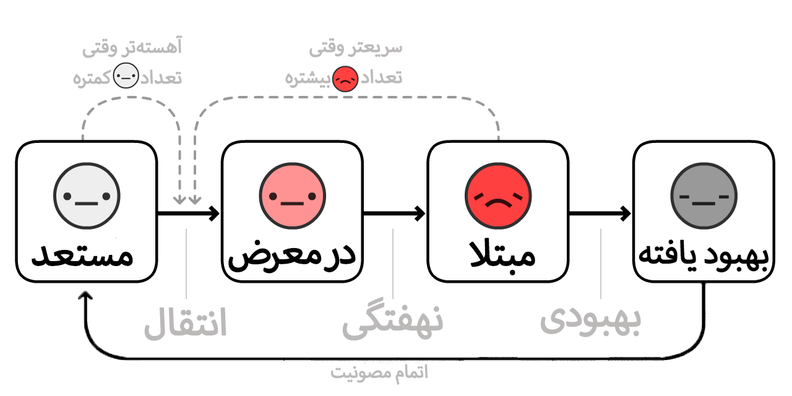
حالا بیاید شیوع کووید-۱۹ رو، در طی ۱۰ سال شبیهسازی کنیم، اگر هیچ مداخلهای رخ نده… و اگه ایمنی یک سال طول بکشه:
در شبیهسازیهای قبلی، ما فقط یک مورد اوجگیری بیماری داشتیم که از حد توان ICUهامون فراتر میرفت. اما الان چندینتا داریم، و موارد
رسیدن به مرحلهٔ بومگیری، R=1.
خوشبختانه، تابستون مقدار R رو کاهش میده و اوضاع رو بهتر میکنه:
اوه.
برخلاف تصور، تابستون اوجهای شیوع بیماری رو بدتر و تکرار شونده میکنه! دلیلش اینه که تابستون تعداد
خوشبختانه، راه حل این موضوع خیلی سر راسته - هر پاییز/زمستون مردم رو واکسینه کنیم:
(بعد از دیدن حالت ضبط شده، سعی کنید کارزارهای واکسیناسیون خودتون رو شبیهسازی کنید. یادتون باشه که در طول فرایند شبیهسازی میتونید متوقفش کنید و دوباره ادامهاش بدید.)
اما سوال ترسناکتر اینه:
چی میشه اگه برای سالها واکسن پیدا نشه؟ یا برای همیشه؟
راستش: احتمالش کمه. بیشتر همهگیرشناسها انتظار دارن در یکی دو سال آینده به واکسن دست پیدا کنیم. آره، برای هیچ کرونا ویروس دیگهای قبلا واکسن نبوده، اما دلیلش اینه که سارس به سرعت مهار شد، و سرماخوردگی «عادی» هم ارزش سرمایهگذاری رو نداشت.
با این وجود، محققان بیماریهای واگیردار ابراز نگرانی کردن که: اگه نتونیم به اندازهٔ کافی واکسن تولید کنیم چی؟42 اگه عجله کنیم و واکسن ایمنی تولید نکنیم؟43
حتی در سناریوی کابوسناک «بدون واکسن» سه راه خروج داریم.به ترتیب از وحشناکترینشون تا کموحشتناکترینشون:
1) مداخلات متناوب و ضعیفی برای رسیدن به 1>R انجام بدیم، تا به تدریج به «ایمنی جمعی طبیعی» برسیم. (اخطار: این روش به کلی مرگ و میر و ریههای از بین رفته منجر میشه. همچنین اگه ایمنی به دست اومده طولانی نباشه به درد نمیخوره.)
2) برای همیشه مداخلات که منجر به 1>R میشن رو انجام بدیم. ردیابی مخاطبان و پوشیدن ماسک شاید به اتفاقی طبیعی در دنیای پسا-کووید-۱۹ تبدیل بشه، مثل طبیعی شدن آزمایشهای بیماریهای آمیزشی و استفاده از کاندوم در دنیای پسا-اچآیوی.
3) انجام مداخلات برای داشتن 1>R تا زمانی که به درمانی دست پیدا کنیم که اثرات کووید-۱۹ رو به قدری کاهش بده که مبتلایان نیاز بسیار کمی به مراقبتهای حیاتی بیمارستانی داشته باشن. (البته باید در هر صورت دنبال چنین درمانهایی باشیم!) کاهش ۱۰ برابری استفاده از بخش مراقبتهای ویژه معنی ۱۰ برابر شدن ظرفیتشون رو هم میده:
این شبیهسازی حالتیه که هیچ ایمنی بلند مدتی وجود نداشه باشه، واکسنی در کار نباشه، و هیچ مداخلهای صورت نگیره - فقط ظرفیت رو به مرور افزایش بدیم تا بتونیم به اوج رسیدنهای بلند مدت رو تاب بیاریم.
در بدترین حالت ممکن هم… زندگی ادامه پیدا میکنه.
…
شاید شما بخواید فرضیات ما رو به چالش بکشید، و مقدار R0های مختلفی رو امتحان کنید. یا ترکیب روشهای مداخلهٔ مختلف رو امتحان کنید!
برای این کار شما میتونید از حالت (اختیاری) شنبازی استفاده کنید، که همهٔ متغییرها توش در دسترس هستند. (نوار کناری رو پایین ببرید تا همهٔ حالات رو ببینید) با هر ترکیبی که دوست دارید شبیهسازی و بازی کنید:
همین «شبیهساز-پرواز همهگیری» ساده خیلی چیزها به ما یاد داد. به ما اجازه داد به سوالتی در مورد ماههای پیشین، ماههای پیشرو و سالهای آینده پاسخ بدیم.
حالا در نهایت، بیاید برگردیم به...
هواپیما غرق شده. تقلا میکنیم با قایقهای نجات خودمون رو جایی برسونیم. زماناش رسیده به ساحل برسیم.44
تیمهایی از همهگیرشناسها (از چپ، راست و چند حزبیها) به یک توافق سر روش مقابله با کووید-۱۹ رسیدن که بتونیم در عین حال از زندگیها و آزادیهامون محافظت کنیم.
کلیت ایده این شکلیه، با تعدادی راهکارهای پشتیبان (که البته توافق کمتری روشون هست.):
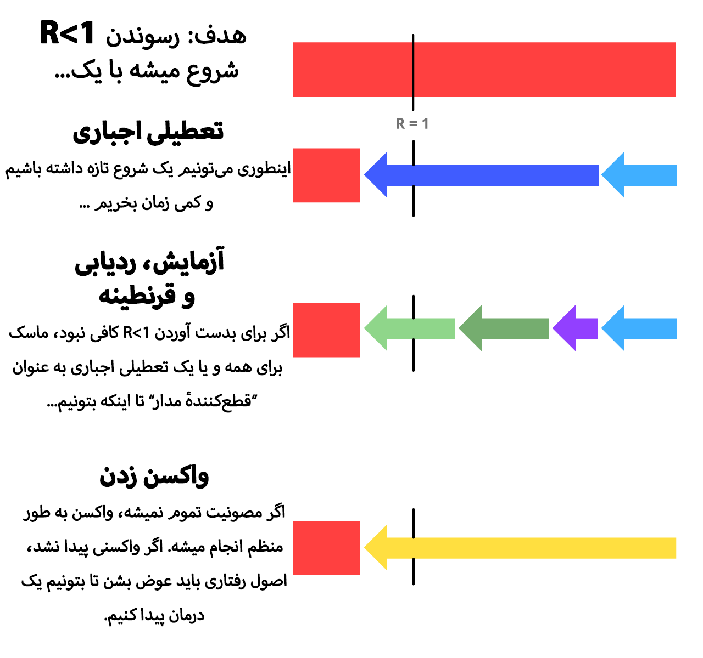
خوب این الان برای شما چه معنی میده؟
برای همه: به تعطیلیهای اجباری احترام بذاریم تا بتونیم هرچه سریعتر از فاز ۱ بیرون بیایم. به شستن دستهاتون ادامه بدید. برای خودتون ماسک تهیه کنید. اپ ردیابی مخاطبینی که احترام به حریم شخصی میذاره رو در اولین فرصت دانلود کنید. سالم بمونید، چه جسمی چه روانی. و در نهایت با سیساستمدارهاتون تماس بگیرید تا بیعملی و تنبلی رو کنار بذارن و…
برای سیساستمدارها: قوانینی رو به جریان بیندازید که از افرادی که باید خود-قرنطینگی کنن مراقبت بشه. ردیابان مخاطب بیشتری استخدام کنید، در کنارش از اپهای ردیاب مخاطب مبتنی بر حفظ حریم شخصی حمایت کنید. بودجهٔ بیشتری رو به ساخت چیزهایی اختصاص بدید که …
برای سازندگان: وسایل مورد نیاز آزمایش رو بسازید. دستگاههای تنفس مصنوعی بسازید. تجهزات حفاضت شخصی برای کادر درمانی بیمارستانها بسازید. وسایل آزمایشگاهی بسازید. ماسک درست کنید. اپ بنویسید. درمانهای ضد ویروس و پیشگیری کننده آماده کنید. واکسن تهیه کنید. آزمایش بسازید. آزمایش بسازید. آزمایش بسازید. امید درست کنید.
ترس رو از بین نبریم تا امید شکل بگیره. ترس و امید باید با هم تیم باشن، مثل مخترعان هواپیما و چتر نجات. آماده شدن برای یه آینده ترسناک باعث میشه یه آینده امیدوار کننده بسازیم.
تنهای چیزی که باید ازش بترسیم این ایده است که از تنها چیزی که باید بترسیم فقط ترسه.
-
در این پانویسها به بررسی منابع، ارجاعات و توضیحات تکمیلی میپردازیم، مثل این توضیح!↩
این راهنما در تاریخ ۱۲ اردیبهشت ۱۳۹۹ تدوین شده. برخی از جزئیات ممکنه قدیمی بشن، اما اطمینان داریم که ۹۵٪ آیندههای ممکن رو پوشش میدیم، و مبحث «مقدمهای بر همهگیرشناسی» برای همیشه مفید باقی خواهد ماند.
(بهروزرسانی ۲۶ اردیبهشت: اضافه کردن منابع برای «۱ نفر از هر ۲۰ نفر راهی بیمارستان میشن» و «۰.۵٪ افراد مبتلا فوت میکنن»)
-
« میانگین بازهٔ زمانی {متوالی} ۳.۹۶ روز خواهد بود (بازهٔ اطمینان ۹۵٪ بین ۳.۵۳ تا ۴.۳۹ روز)» Du Z, Xu X, Wu Y, Wang L, Cowling BJ, Ancel Meyers L (سلب مسئولیت: نسخهٔ اولیه مقالات نباید نسخهٔ نهایی آنها تلقی شوند.) ↩
-
یادمون باشه: همهٔ این شبیهسازیها برای مقاصد آموزشی هستن و خیلی سادهسازی شدن. ↩
یکی از سادهسازیها: وقتی در این شبیهسازی میگید: « ۱ فرد جدید رو هر X روز یکبار مبتلا میکنه»، در حقیقت تعداد افراد مبتلا هر روز 1\X افزایش پیدا میکنه. برای تنظیمات آینده شبیهسازها هم همین برقراره - «هر X روز یکبار بهبود پیدا میکنه» در حقیقت تعداد افراد مبتلا رو هر روز 1\X کاهش میده.
تعریف اصلی و تعریفی که در شبیهسازیها وجود داره، دقیقا یکی نیستند، اما به اندازهٔ کافی به هم شبیهاند، و برای اهداف آموزشی شیوهٔ استفاده شده ابهام کمتری نسبت به دخیل کردن دقیق نرخ انتقال/بهبودی به وجود میاره.
-
«دورهٔ میانهٔ انتقال {...} ۹.۵ روز بوده» Hu, Z., Song, C., Xu, C. et al بله، متوجه هستیم «میانه» با میانگین فرقداره، اما برای اهداف آموزشی ما، به اندازهٔ کافی به هم نزدیک هستند. ↩
-
برای دیدن توضیحات فنی بیشتر در مورد مدل SIR، مطالب موسسهٔ مدلکردن بیماریها و ویکیپدیا رو ببینید. ↩
-
برای دیدن توضیحات فنی بیشتر در مورد مدل SEIR، مطالب موسسهٔ مدلکردن بیماریها و ویکیپدیا رو ببینید. ↩
-
«اگه بر اساس مطالعهای که روی موارد اولیه کووید-۱۹ انجام شده، فرض کنیم دورهٔ نهفتگی توزیعی با میانگین ۵.۲ داره، ما نتیجه گرفتیم که امکان انتقال از ۲.۳ روز قبل از شروع علائم شروع میشه.»( بازهٔ اطمینان ۹۵٪ بین ۰.۸ تا ۳.۰ روز)( یعنی: اگه فرض کنیم علائم در روز ۵ام ظاهر میشن، امکان انتقال از ۲ روز قبلش شروع میشه، در نتیجه از روز ۳ام بیماری میتونه بقیه رو مبتلا کنه) He, X., Lau, E.H.Y., Wu, P. et al. ↩
-
«مقدار میانهٔ R برای آنفولانزای فصلی ۱.۲۸ هستش.( دامنهٔ بین چارکی: ۱.۱۹-۱.۳۷)» Biggerstaff, M., Cauchemez, S., Reed, C. et al. ↩
-
«حدس میزنیم عدد سرایت پایهٔ برای nCov-2019 حدود ۲.۲ باشه.( ۹۰٪ تراکم بالا بین: ۱.۴-۳.۸)» Riou J, Althaus CL. ↩
-
«ما مقدار میانهٔ R0 رو ۵.۷ حدس میزنیم. (بازهٔ اطمینان ۹۵٪ بین ۳.۸ تا ۸.۹)» Sanche S, Lin YT, Xu C, Romero-Severson E, Hengartner N, Ke R. ↩
-
در این جا تظاهر میکنیم که در طی «دورهٔ ابتلا» به یک اندازه قابلیت به بقیه رو دارید. دوباره، این سادهسازیها برای اهداف آموزشیه. ↩
-
یادتون باشه که R = نسبتی از انتقالها که هنوز امکانپذیره*R0.همچنین حواستون باشه که نسبتی از انتقالها که هنوز امکانپذیره = 1- نسبتی از انتقال که متوقف شده. ↩
در نتیجه، برای رسیدن به 1>R0، انتقالامکانپذیر * R0 رو باید زیر ۱ نگه داریم.
در نتیجه، انتقالامکانپذیر < 1\R0
در نتیجه، ۱-انتقالمتوقفشده < 1\R0
در نتیجه، انتقالمتوقفشده > 1 - 1\R0
در نتیجه، باید بیش از 1 - 1\R0 از انتقالها رو متوقف کنید تا به 1>R برسید و ویروس رو مهار کنید!
-
{بهروزرسانی ۲۶ اردیبهشت} خیلی از شماها به درستی اشاره کردید که ارجاع قبلی برای «۱ نفر از هر ۲۰ نفر راهی بیمارستان میشن» بر اساس اطلاعات قدیمی ایالات متحده آمریکا از موارد تایید شده بوده - که خیلی کمتر از موارد واقعی هستش، به خاطر نبود آزمایش. ↩
خوب، بیاید به کشوری که بیشترین مقدار آزمایش به ازای هر نفر رو انجام داده نگاهی بیندازیم: آیسلند. در روز ۲۶ اردیبهشت ۱۳۹۹، ۱۱۵ مورد بیمارستانی شده در میان ۱۸۰۲ مورد تایید شده داشتند، حدود ۶.۴٪ بیمارستانی شده، یعنی ۱ نفر در هر ۱۶ نفر.
یک تحقیق جدیدتر در رابطه با کووید-۱۹ در فرانسه - با استفاده موارد قطعی رسمی که البته شامل آزمایشهای آنتیبادی هم میشدن - کشف کرده که «۳.۶٪ افراد مبتلا راهی بیمارستان میشن». یا ۱ نفر در هر ۲۸ نفر.
به طور کلی، قطعیتی وجود نداره، ولی «۱ نفر در هر ۲۰ نفر» تقریبا به مقدار واقعی نزدیکه. جدا از این، برای بقیه شبیهسازی، ما ظرفیت بیمارستانها رو سه برابر حدی که هست در نظر گرفتیم - بنابراین اگه حتی «۱ نفر در هر ۲۰ نفر» سه برابر بیشتر از مقدار واقعی باشه، اصل حرفهامون پابرجاست.
ارجاع قبلی: «
درصدی از بیماران در ایالات متحده که در بازهٔ ۱۲ فوریه تا ۱۶ مارس ۲۰۲۰ مبتلا شدن و به بخش مراقبتهای ویژه(ICU) نیاز پیدا کردهاند، بر اساس گروه سنی» بین ۴.۹٪ تا ۱۱.۵٪ از همهٔ مبتلایان به کووید-۱۹ به ICU نیاز پیدا کردن. اگه بخوایم سخاوتمندانهٔ بازی پایینی رو انتخاب کنیم، میشه ۵٪ یا ۱ نفر در هر ۲۰ نفر. توجه کنید که این آمار بر اساس ساختار سنی ایالات متحده به وجود اومده، و در کشورهایی با جمعیت پیرتر بالاتر و در کشورهایی با جمعیت جوانتر کمتر خواهد بود. -
« تعداد تختهای مراقبت ویژه = ۹۶۵۹۵». بر اساس آمار انجمن مراقبتهای ویژهٔ پزشکی جمعیت ایالات متحده آمریکا در سال ۲۰۱۹ برابر با ۳۲۸،۲۰۰،۰۰۰ نفر بوده. ۹۶۵۹۵ از ۳۲۸،۲۰۰،۰۰ = حدود ۱ از ۳۴۰۰. ↩
-
{بهروزرسانی ۲۶ اردیبهشت} محققان در ایندیانای آمریکا آزمایشی با نمونههای اتفاقی از جمعیت انجام دادن و یافتن که نرخ فوت مبتلایان ۰.۵۸٪ هستش. ↩
-
« او همچنین بیان کرد که هدف واقعی مثل بقیه کشورهاست: صاف کردن نمودار با مدیریت شروع سرایتها. در نتیجه این کار ممکنه کشور به ایمنی جمعی برسه، این یه دستاورد جانبیه، هدف نیست. {...} برنامهٔ اصلی دولت برای کرونا ویروس به صورت آنلاین در دسترس هستش، و اصلا اشارهای به ایمنی جمعی نمیکن.» ↩
بر اساس مقالهای در آتلانتیک به قلم اد یانگ.
-
« هر هشت مطالعهٔ قابل استناد گزارش دادن شستن دستها شانس ابتلا به بیماریها عفونی ریوی رو کاهش میده، با کاهش خطری بین ۶٪ تا ۴۴٪ {مقدار تلفیقی ۲۴٪ (بازهٔ اطمینان ۹۵٪ بین ۶٪ تا ۴۰٪)}» ما مقدار تلفیقی رو برای سادگی شبیهسازی به ۲۵٪ رند کردی. Jarvis and Zandvoort et al نکته: همون جوری که این فرا-تحلیل نشون میده، کیفیت مطالعات در مورد شستوشوی دست (حداقل در کشورهای با سرانهٔ درآمد بالا) افتضاحه. ↩
-
«ما ۷۳٪ کاهش در تعداد ارتباطات روزانهٔ هر فردی که مورد مطالعه بود پیدا کردیم. در نتیجه این رویکرد کافی خواهد بود تا مقدار R0 رو از ۲.۶ قبل از تعطیلیهای اجباری به ۰.۶۲(۰.۳۷ - ۰.۸۹) در طی تعطیلیها برسونیم.» برای سادگی در شبیهسازی ما درصد کاهش ارتباطات رو به ۷۰٪ رند کردیم. ↩
-
اعوجاجات از بین میره اگه R رو روی نمودار لگاریتمی رسم کنیم… ولی اون موقع باید مقایسهای لگاریتمی رو معرفی کنیم. ↩
-
«در غیاب سایر مداخلات، شاخص کلیدی که موفقیت فاصلهگذاری اجتماعی رو نشون میده اینه که آیا طرفیتهای مراقبتهای بحرانی رد شده یا نه. برای جلوگیری از این موضوع، فاصلهگذاری اجتماعی طولانی مدت یا متناوب ممکنه تا سال ۲۰۲۲ نیاز باشه.» Kissler and Tedijanto et al ↩
-
شکل ۶ از Holt-Lunstad & Smith 2010 رو ببینید. قطعا، یک سلب مسئولیت بزرگ اینه که اونها همبستگی پیدا کردن. اما به جز حالتی که شما بخواید به صورت تصادفی افراد رو برای کل مدت زندگیشون تنها نگه دارید، شواهد مبتنی بر مشاهدات تنها چیزیه که میتونید به دست بیارید. ↩
-
به طور میانگین ۳ روز تا پیدا کردن قابلیت انتقال: «اگه بر اساس مطالعهای که روی موارد اولیه کووید-۱۹ انجام شده، فرض کنیم دورهٔ نهفتگی توزیعی با میانگین ۵.۲ داره، ما نتیجه گرفتیم که امکان انتقال از ۲.۳ روز قبل از شروع علائم شروع میشه.(بازهٔ اطمینان ۹۵٪ بین ۰.۸ تا ۳.۰ روز)( یعنی: اگه فرض کنیم علائم در روز ۵ام ظاهر میشن، امکان انتقال از ۲ روز قبلش شروع میشه، در نتیجه از روز ۳ام بیماری میتونه بقیه رو مبتلا کنه) He, X., Lau, E.H.Y., Wu, P. et al. ↩
به طور میانگین ۴ روز تا مبتلا کردن فرد دیگر: « میانگین بازهٔ زمانی {متوالی} ۳.۹۶ روز خواهد بود ( بازهٔ اطمینان ۹۵٪ بین ۳.۵۳ تا ۴.۳۹ روز)» Du Z, Xu X, Wu Y, Wang L, Cowling BJ, Ancel Meyers L
به طور میانگین ۵ روز تا بروز علائم: «میانهٔ دورهٔ نهفتگی ۵.۱ روزه (بازهٔ اطمینان ۹۵٪ بین ۴.۵ تا ۵.۸ روز)» Lauer SA, Grantz KH, Bi Q, et al
-
«تخمین میزنیم ۴۴٪ (بازهٔ اطمینان ۹۵٪ بین ۲۵-۶۹٪) از موارد ثانوی در طی مرحلهٔ بدون علامت از مبتلایان مشخص شدهٔ قبلی گرفتهاند.» He, X., Lau, E.H.Y., Wu, P. et al ↩
-
«ردیابی مخاطبان مداخلهای حیاتی در لیبی بود و یکی از بزرگترین تلاشهای صورت گرفته در تاریخ برای ردیابی مخاطبان را نمایندگی میکند.» Swanson KC, Altare C, Wesseh CS, et al. ↩
-
برای جلوگیری از «شوخیهای فریبکارانه» ( مردم به اشتباه مدعی بشن که مریض هستن)، برای استفاده از پروتکل DP-3T نیازه بیمارستان به شما یک رمز عبور یکبار مصرف بده تا بتونید با استفاده از اون پیامهاتون رو بارگزاری کنید. ↩
مثبتهای کاذب مشکلی مشترک بین روشهای ردیابی مخاطب توسط افراد و دیجتالی هستش. با این وجود میتونیم مثبتهای کاذب رو به دو روش کم کنیم: ۱) باب رو فقط وقتی مطلع کنیم که به طور مثال بیش از ۳۰ دقیقه پیام از اشخاص ویروسدار دریافت کرده باشه. ۲) حتی اگه اپ فکر کنه باب در معرض بیماری قرار گرفته اون رو به یکی از افرادی که مسئولیت ردیابی مخاطبان داره برای مصاحبه در راستای پیگیری عمیقتر موضوع ارجاع بده.
برای مشکلات مثل پهنای باند، صحت منابع، و سایر مشکلات امنیتی، سپیدنامههای منبعباز DP-3T رو بررسی کنید.
-
شمارهٔ مخاطبان موقتی، پروتکلی غیرمتمرکز و با رعایت حریم شخصی ↩
-
اپل و گوگل روی فناوری ردیابی مخاطبان برای کووید-۱۹ همکاری میکنن. توجه کنید که اونها خودشون اپها رو نمیسازن، فقط سامانههایی رو توسعه میدن که بتونه این اپها رو پشتیبانی کنه. ↩
-
خیلی از گزارشهای خبری - و اگه راستش رو بخواید، خیلی از مقالات علمی - بین «مواردی که موقعی که آزمایششون میکردیم هیچ علائمی نداشتن»( انتقال پیش از علائم) و «مواردی که هیچ وقت هیچ علائمی نشون ندادن»(موارد بدون علامت واقعی) تفاوتی قائل نمیشن. تنها راهی که میشه تفاوت بین این دو حالت رو تشخیص داده اینه که موارد مبتلا رو بعدا هم پیگیری کنی. ↩
این کاریه که این مطالعه انجام داده.(سلب مسئولیت: نسخهٔ اولیه مقالات نباید نسخهٔ نهایی آنها تلقی شوند.) در یک مرکز تماس در کره جنوبی که شیوع کووید-۱۹ در اون رخ داده، «فقط ۴ نفر(۱.۹٪) در طی ۱۴ روز قرنطینه بدون علامت باقی موندن، و هیچ کدوم از اعضای خانواده که باهاشون در تماس بودن از طریق اونها این بیماری رو نگرفتن»
در نتیجه «واقعا بدون علامت» خیلی نادرن، و گرفتن بیماری از یک شخص بدون علامت احتمالا خیلی نادرتره!
-
با توجه به مطالعات دانشگاه آکسفورد که برای اولین استفاده از اپهای برای مقابله با کووید-۱۹ رو پیشنهاد کرده بود: به شکل ۲ Luca Ferretti & Chris Wymant et al نگاه کنید. با فرض R = 2.00 اونها به این نتیجهها رسیدن: ↩
- نقش افراد با علامت در R برابر با ۰.۸ هستش (۴۰٪)
- نقش افراد منتقلکننده پیش از علائم در R برابر با ۰.۹ هستش (۴۵٪)
- نقش افراد بودن علامت در R برابر با ۰.۱ هستش (۵٪. اما این مدل عدم قطعیت داره و ممکنه این میزان خیلی کمتر باشه)
- نقش عوامل محیطی مثل دستگیرههای در R برابر با ۰.۲ هستش (۱۰٪)
و اگر موارد بدون علامت و انتقال پیش از علائم رو با هم جمع کنیم (۴۵٪+۵٪) به ۵۰٪ از R میرسیم!
-
«هیچ کدوم از ماسکهای جراحی عملکرد فیلتر کردن و منطبق شدن بر صورت رو به صورت مناسبی نشون نمیدن، در نتیجه ویژگیهای مناسب برای در نظر گرفته شدن برای محافظت از دستگاه تنفسی رو ندارن» Tara Oberg & Lisa M. Brosseau ↩
-
« کاهش ۳.۴ برابری {۷۰٪ کاهش} در هواپخشها با اعدادی که ما مشاهده کردیم مطابقت داره و ترکیب اون با مشاهدات Johnson et al. که به از بین رفتن هواپخشهای بزرگ اشاره داره ما رو به این نتیجه میرسونه که پوشیدن ماسک توسط افراد مبتلا میتونه از نظر بالینی تاثیر بسزایی در انتقال ویروس داشته باشه.» Milton DK, Fabian MP, Cowling BJ, Grantham ML, McDevitt JJ ↩
-
هر دانشمند واقعی که جملهٔٔ آخر رو بخونه احتمالا در حال حاضر در حال لبخند-گریه است. این دو مقالهٔ ویکیپدیا رو در این رابطه ببینید: پی-هکینگ، بحران تکرار ↩
-
«الان وقتشه که اقدامات احتیاطی رو انجام بدیم» Trisha Greenhalgh et al [PDF] ↩
-
Davies, A., Thompson, K., Giri, K., Kafatos, G., Walker, J., & Bennett, A به جدول ۱ نگاه کنید: یک تیشرت ۱۰۰٪ کتان حدود دو سوم یک ماسک جراحی قابلیت فیلتر کردن داره، برای دو باکتری هواپخشی که روش آزمایش انجام دادن. ↩
-
«ما باید منابع رو برای بیمارستانها نگه داریم». کاملا موافقیم. اما این باید منجر بشه که تولید ماسک رو افزایش بدیم، نه اینکه جیرهبندی کنیم. در عین حال میتونیم ماسک پارچهای درست کنیم. ↩
«سخته که درست بپوشیمشون» خوب شستن دست با توجه به قواعد سازمان بهداشت جهانی سخته - جدا، «مرحلهی ۳)کف دست راست روی پشت دست چپ بکشید»؟! - اما با این وجود ما شستن دستها رو پیشنهاد میکنیم، چون نقص داشتن هنوز بهتر از هیچ چیه.
«مردم با شستن دست و فاصلهگذاری اجتماعی بیملاحظهتر میشن.» آره، و کمربند ایمنی مردم رو نسبت به علامت توقف بیتفاوتتر میکنه، و نخ دندون کشیدن باعث میشه مردم سنگ بخورن. اما جدی، میتونیم خلافاش رو هم بگیم: ماسکها یک یادآور دائمی برای رعایت فاصلهٔ فیزیکن - و در آسیای شرقی ماسک تبدیل به یک نماد همدلی شدن!
-
«یک درجهٔ سلسیوس افزایش دما {...} مقدار R رو ۰.۰۲۲۵ واحد کاهش میده.» و «میانگین مقدار R در این ۱۰۰ شهر ۱.۸۳ هستش». ۰.۰۲۲۵+۱.۸۳= ~۱.۲٪ Wang, Jingyuan and Tang, Ke and Feng, Kai and Lv, Weifeng ↩
-
در سال ۲۰۱۹ در سنترال پارک نیویورک، گرمترین ماه (جولای) ۷۶.۹ درجهٔ فارنهایت بوده، و سردترین ماه (ژانویه) ۳۲.۵ درجهٔ فارنهایت. تفاوت دما میشه ۴۷.۱ درجهٔ فارنهایت، یا حدود ۲۵ درجهٔ سانتیگراد. PDF from Weather.gov ↩
-
«آنتیبادیهای مختص سارس برای حدود ۲ سال پایدار میمونن {...} در نتیجه بیماران مبتلا به سارس ممکنه از حدود ۳ سال بعد از ابتلای اولیه مستعد دوباره گرفتن باشن.» Wu LP, Wang NC, Chang YH, et al. «متاسفانه» ما هیچ وقت نخواهیم فهیم چه قدر ایمنی در مقابل سارس واقعا طول خواهد کشید، چون خیلی سریع از بین بردیمش. ↩
-
«ما هیچ تفاوت معناداری بین احتمال حداقل یکبار آزمایش مثبت و احتمال بازگشت بتا-کروناویروسها HKU1 و OC43 سی و چهار هفته بعد از مراجعه/اولین ابتلا پیدا نکردیم». Marta Galanti & Jeffrey Shaman (PDF) ↩
-
«وقتی که یک فرد شروع به مبارزه با ویروس میکنه، ذرات ویروسی به نظر مدتی باقی میمونن. این ذرات باعث بیماری نمیشن، اما میتونن باعث مثبت شدن نتیجهٔ آزمایش بشن.» برگرفته از STAT News توسط Andrew Joseph ↩
-
برگرفته از Bao et al. . سلب مسئولیت: این نوشتهٔ پیش از انتشار رسمی است و (هنوز) بازبینی نشده. همچنین برای تاکید بیشتر: فقط ۲۸ روز بعد برای ابتلای دوباره آزمایش شدن. ↩
-
«اگر واکسن کرونا آماده بشه، دنیا میتونه به اندازهٔ کافی تولیدش کنه» توسط Roxanne Khamsi, در Nature ↩
-
«برای گسترش واکسن و داروی کووید-۱۹ بدون گارانتیهای ایمنی کافی عجله نکنید» توسط Shibo Jiang, در Nature ↩
-
استعارهٔ ساحل از توسط Marc Lipsitch & Yonatan Grad, در STAT News ↩
 مالکیت عمومی
مالکیت عمومی